← Portfolio로 돌아가기
프로젝트 개요
보세운송, 항공, 내륙 운송 등 다양한 운송 업무를 통합 관리하는
TMS(Transportation Management System) 고도화 프로젝트입니다.
운임코드·선사코드·차량·기사·사시(샤시) 등 물류 기초코드를 체계적으로 관리하고,
Location/Depot 거점 정보와 가용차량 현황을 실시간으로 운용할 수 있도록 기능을 개발하였습니다.
또한 월간 실적 및 컨테이너별 청구·비용 대비 분석 화면을 구축하여
운송 실적의 정산 및 수익성 분석 업무를 지원하였습니다.
기술 스택
Java
Vue.js
Spring Boot
Oracle
MyBatis
REST API
GitLab
담당 업무
- 운임코드 등록·수정·조회 기능 개발
- 선사코드 관리 화면 개발
- 차량코드 및 차량기사 관리 기능 개발
- 사시(샤시)코드 및 사시정비 관리 기능 개발
- Location/Depot 거점 관리 화면 개발
- 가용차량 관리 기능 개발
- 월간 실적 조회 화면 개발
- 컨테이너별 실적 및 청구·비용 대비 분석 화면 개발
- Vue.js + Spring Boot 기반 REST API 개발 및 Oracle 쿼리 작성
주요 기능
운임코드 관리
보세운송, 항공 등 시스템별 운임코드를 등록하고 관리하는 기능을 구현하였습니다.
- 시스템·운임그룹·실적구분 기반 운임코드 등록 및 수정 기능 개발
- 청구코드명·비용코드명 연계 관리 기능 구현
- 세금구분, 부가세율, 청구용도, 지불용도 등 속성 관리
- CY·사용여부 설정 및 기존 코드 마이그레이션 비고 처리
- 220건 이상 대용량 코드 목록 조회 및 검색 기능 구현
선사코드 관리
운송에 사용되는 선사 정보를 등록하고 관리하는 기능을 개발하였습니다.
- 선사코드, 선사명, 세관코드 기반 검색 기능 구현
- 주선사 여부, Main VAN사, 거래처코드 등 상세 정보 관리
- 선사코드 약칭 및 적용여부·사용여부 관리 기능 개발
- 926건 이상 선사 목록 페이징 및 다중 선택 기능 구현
차량코드·차량기사 관리
협력사 차량과 기사 정보를 등록하고 운용 현황을 관리하는 기능을 구현하였습니다.
- 차량 단축No, 영업번호, 차량소유형, 운송형태 기반 검색 및 등록
- 기본정보·추가정보·FPIS정보 탭 구조로 상세 정보 분리 관리
- 14,722건 대용량 차량 목록 페이징 처리 구현
- 기사코드, 기사유형, 소속사, 스마트워크 앱 사용 여부 관리
- APP 전송 기능 연동 및 계약일자 기간 관리 구현
- 5,014건 기사 정보 조회 및 검색 기능 개발
사시코드·사시정비 관리
컨테이너 사시(샤시) 장비 정보와 정비 이력을 관리하는 기능을 개발하였습니다.
- 사시코드, 사시구분, 사시TYPE 기반 검색 및 등록 기능 구현
- 사시상태(최고·양호·수리요망), 연식, 특이사항, 검사일자 관리
- 사무소 검사일·최종검사일·추후검사일·검사만료일 날짜 통합 관리
- 사시정비 이력(정비일자, 정비사유유형, 협력사명, 정비금액) 등록 및 조회
Location / Depot 관리
운송 거점(Location) 및 Depot 정보를 통합 관리하는 화면을 개발하였습니다.
- 지역코드·지역명·부서코드 기반 Location 목록 조회 기능 구현
- Depot 코드, Type(화주작업지 등), 담당자, 주소, 연락처 관리
- COPINO 전송유무, KLNET ID, CY, PATH 등 EDI 연계 정보 관리
- 보세구역 장치장 코드 및 보세특레구역 여부 설정 기능 구현
- 223건 Location / 143건 Depot 목록 좌우 분할 연계 조회 구현
가용차량 관리
날짜·부서·협력사 조건으로 가용 차량 현황을 조회하고 관리하는 기능을 구현하였습니다.
- 가용일자, 부서코드, 협력사, 단축No 기반 조회 기능 개발
- 차량ID, 영업NO, 차량타입, 기사명 등 운용 정보 표시
- 상태별 필터링 및 행 추가·삭제 기능 구현
월간 실적 조회
월 단위 운송 실적을 매출·비용·이익 기준으로 조회하는 화면을 개발하였습니다.
- 마감(전기)월 기준 거래처·W/O 구분·부서코드 조건 검색 구현
- 운임별 매출(운송료, 부가서비스, 부대매출, FIMS매출) 집계 표시
- 운임별 비용 및 청구(전월·당월·선청구·미청구금액) 분류 조회
- 하단 합계 행 자동 집계 기능 구현
컨테이너별 실적·청구 대비 분석
컨테이너 단위로 운송 실적과 청구·비용 차이를 분석하는 화면을 개발하였습니다.
- W/O No., CNTR No. 기반 컨테이너별 실적 조회 기능 구현
- I/O(수입/수출), 철송 여부, 실적구분 필터 조건 적용
- 청구대비비용·비용대비청구 전환 조회 기능 개발
- 매출·비용·이익·이익률 및 매출상세(컨테이너운송료·부가서비스·부대운임·기타) 분석
- 하단 합계 행 자동 집계 기능 구현
주요 화면
운임코드 관리
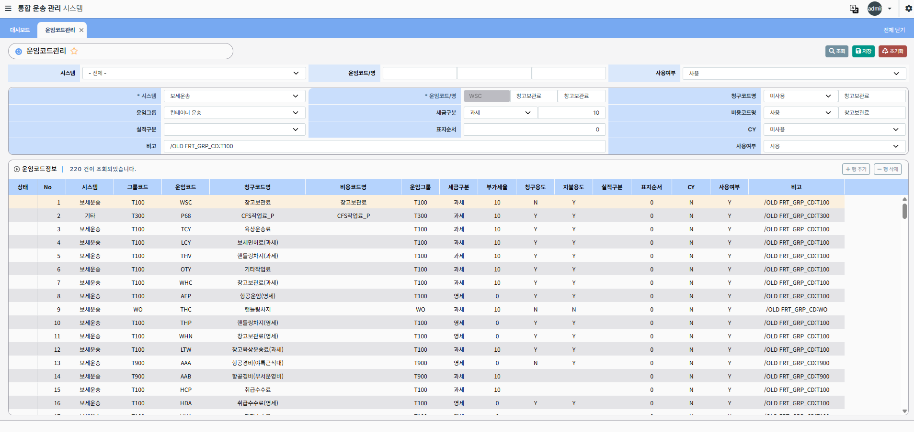
시스템·운임그룹별 운임코드를 등록·조회하는 화면입니다.
상단 입력 폼과 하단 코드 목록을 분리하여 220건 이상의 코드를 관리합니다.
선사코드 관리
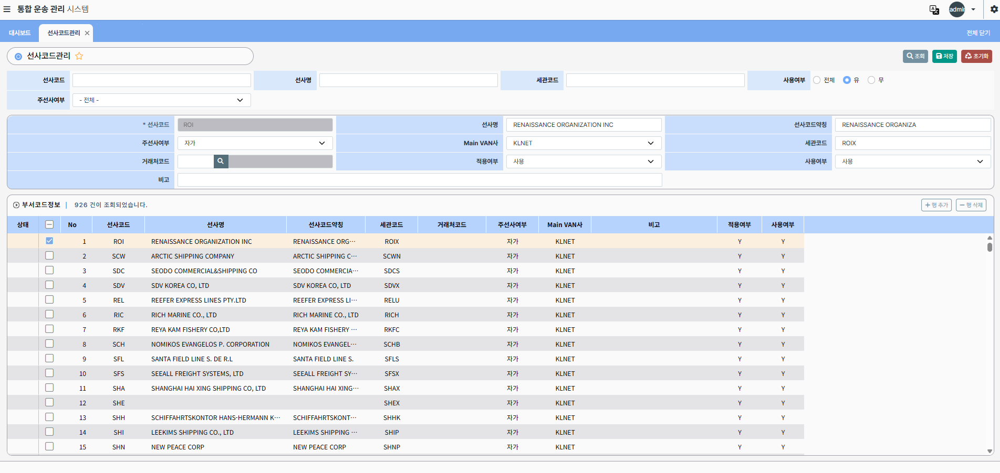
선사코드·세관코드·Main VAN사 등 선사 정보를 등록·조회합니다.
926건 이상의 선사 목록을 다중 선택 및 페이징으로 처리합니다.
차량코드 관리
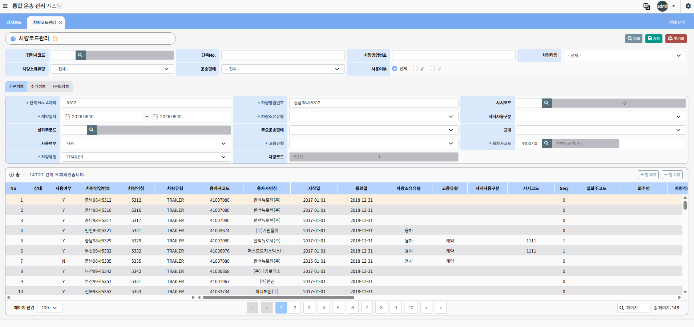
차량 기본정보·추가정보·FPIS정보를 탭 구조로 관리합니다.
14,722건 대용량 차량 목록을 페이징으로 처리하며, 협력사·차량유형 조건 검색을 지원합니다.
차량기사 관리
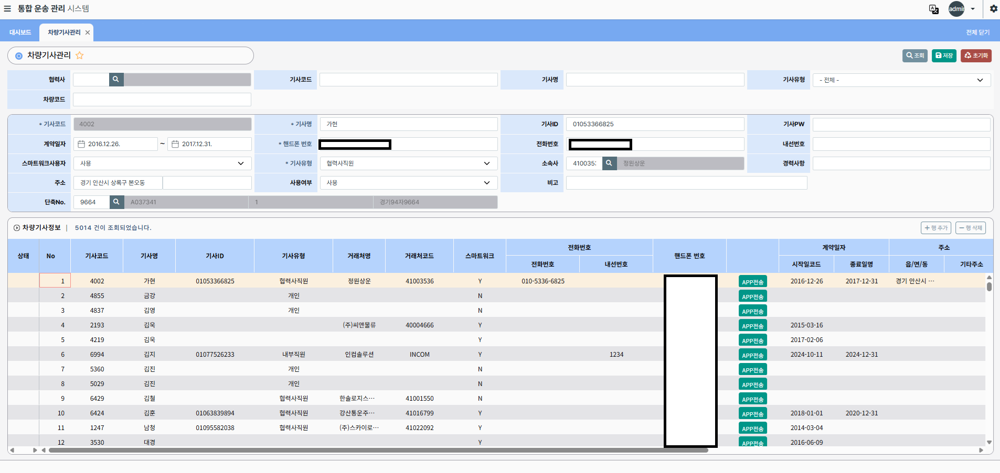
기사코드·유형·소속사·스마트워크 앱 연동 정보를 관리합니다.
5,014건 기사 목록 조회 및 APP 전송 기능을 제공합니다.
샤시코드 관리
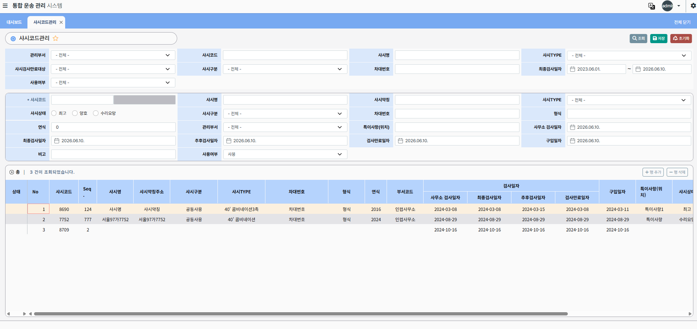
컨테이너 샤시 장비의 코드·상태·검사일자를 통합 관리합니다.
사무소 검사일, 최종·추후·만료 검사일 등 다중 날짜 속성을 지원합니다.
샤시정비 관리
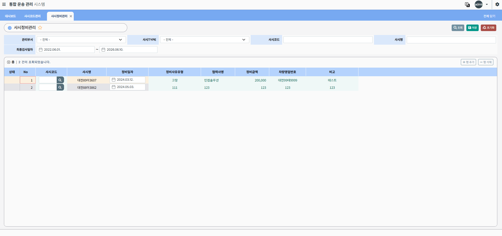
샤시별 정비 이력(정비일자·사유·협력사·금액)을 등록·조회합니다.
차량영업번호와 연계하여 정비 내역을 추적할 수 있습니다.
Location / Depot 관리
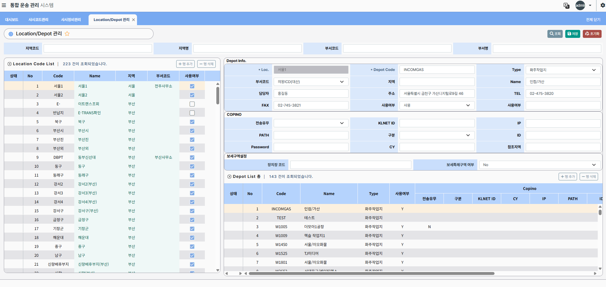
좌측 Location 목록과 우측 Depot 상세 정보를 연계 표시합니다.
COPINO EDI 연계 정보 및 보세구역 설정을 함께 관리합니다.
월간 실적 조회
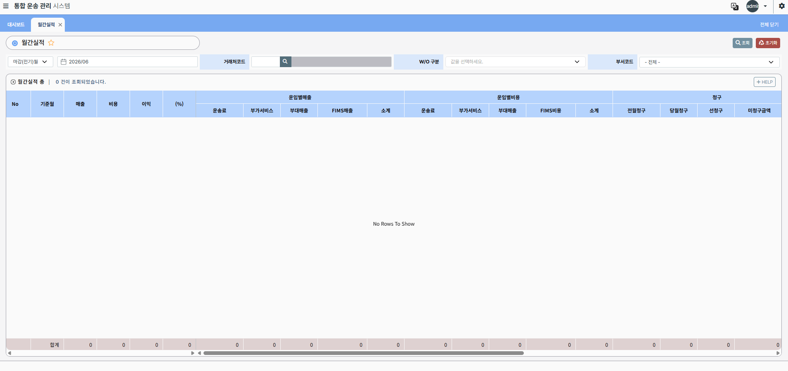
월 단위 운임별 매출·비용·이익을 집계하여 표시합니다.
운송료·부가서비스·부대매출·FIMS 항목별 세부 금액을 분류 조회합니다.
컨테이너별 실적
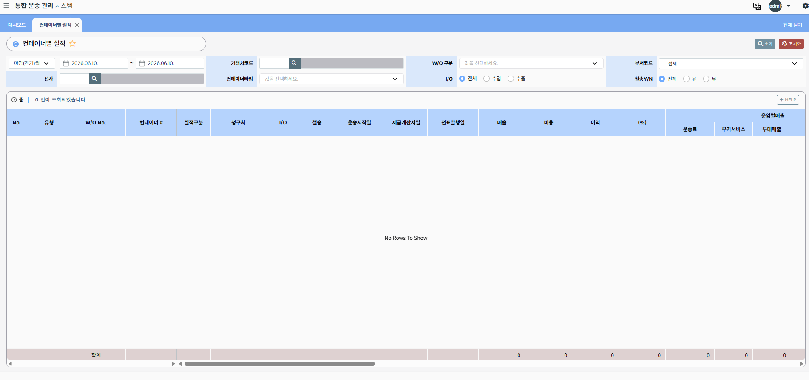
컨테이너 단위로 I/O 구분, 철송 여부를 조건으로 실적을 조회합니다.
수입·수출 분리 및 다양한 필터로 운송 실적 현황을 파악합니다.
컨테이너 청구·비용 대비
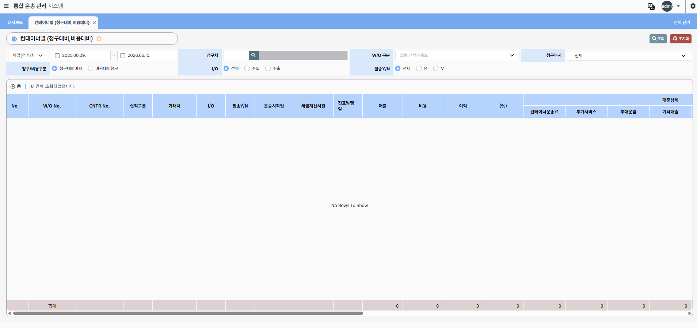
청구대비비용·비용대비청구를 전환하여 수익성을 분석합니다.
W/O No.·CNTR No. 기준으로 매출·비용·이익·이익률을 산출합니다.
가용차량 관리
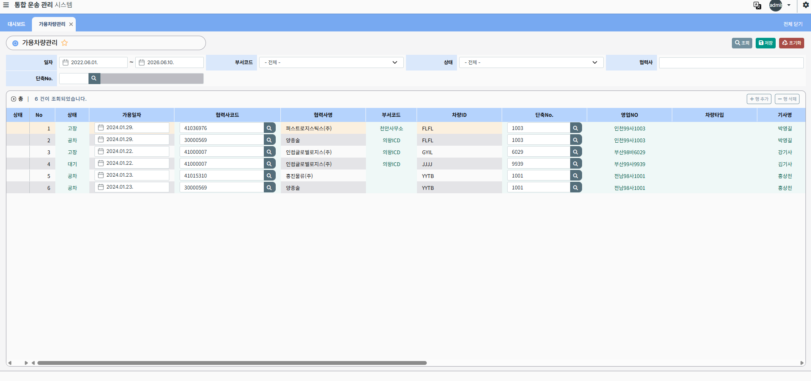
날짜·부서·협력사 조건으로 가용 차량 현황을 조회합니다.
차량ID·영업NO·차량타입·기사명 등 운용 정보를 실시간으로 확인할 수 있습니다.
트러블 슈팅
대용량 코드 목록 조회 성능 개선
차량코드(14,722건), 기사 정보(5,014건), 선사코드(926건) 등
대용량 기초코드 목록 조회 시 응답 속도 저하 문제가 발생하였습니다.
문제 상황
- 기초코드 조회 시 데이터 건수 증가에 따른 응답 속도 저하
- 다수 조인 쿼리로 인한 DB 부하 발생
- Vue.js 화면에서 대용량 그리드 렌더링 지연
원인 분석
- 실행계획(EXPLAIN PLAN) 분석을 통한 Full Scan 구간 확인
- 검색 조건 컬럼 인덱스 미적용 확인
- 불필요한 컬럼 SELECT 및 중복 조인 확인
개선 작업
- 자주 사용되는 검색 조건 컬럼에 인덱스 추가
- 불필요한 조인 제거 및 SELECT 컬럼 최소화
- 페이징 처리(ROWNUM) 적용으로 한 번에 조회하는 데이터 범위 제한
- Oracle 힌트를 활용한 SQL 튜닝 수행
결과
- 목록 조회 응답 속도 개선
- DB 서버 부하 감소
- Vue.js 그리드 렌더링 지연 해소
실적 집계 합계 불일치 문제 해결
월간 실적 화면에서 운임별 매출·비용 합계가 하단 집계 행과 일치하지 않는
문제가 발생하였습니다.
문제 상황
- 운임별 소계와 하단 합계 행 수치 불일치
- 특정 W/O 구분 조건에서만 발생하는 간헐적 오류
원인 분석
- GROUP BY 집계 쿼리에서 NULL 값 처리 누락 확인
- FIMS 매출 항목이 특정 조건에서 집계에서 제외되는 로직 오류 확인
개선 작업
- NVL 처리를 통한 NULL 값 집계 보정
- 집계 쿼리 로직 재검토 및 조건 분기 수정
- 단위 테스트 케이스 추가로 집계 정확성 검증
결과
- 합계 집계 정확도 100% 확보
- 정산 업무 신뢰성 향상
프로젝트 성과
-
운임코드·선사·차량·기사·사시 등 물류 기초코드를 통합 관리하는
코드 관리 체계 구축
-
14,000건 이상 대용량 차량 데이터 페이징 처리 및
Oracle 쿼리 튜닝 경험 확보
-
Location/Depot 거점 정보와 COPINO EDI 연계 데이터 관리 기능 구현
-
월간 실적·컨테이너별 청구 대비 분석 화면 구축으로
운송 수익성 분석 업무 지원
-
Vue.js + Spring Boot 기반 대규모 엔터프라이즈 시스템
개발 경험 습득
-
물류·운송 도메인(보세운송, 컨테이너, 사시, 선사 등) 지식 습득
-
요구사항 분석부터 개발, 테스트, 배포까지
전체 개발 프로세스 수행